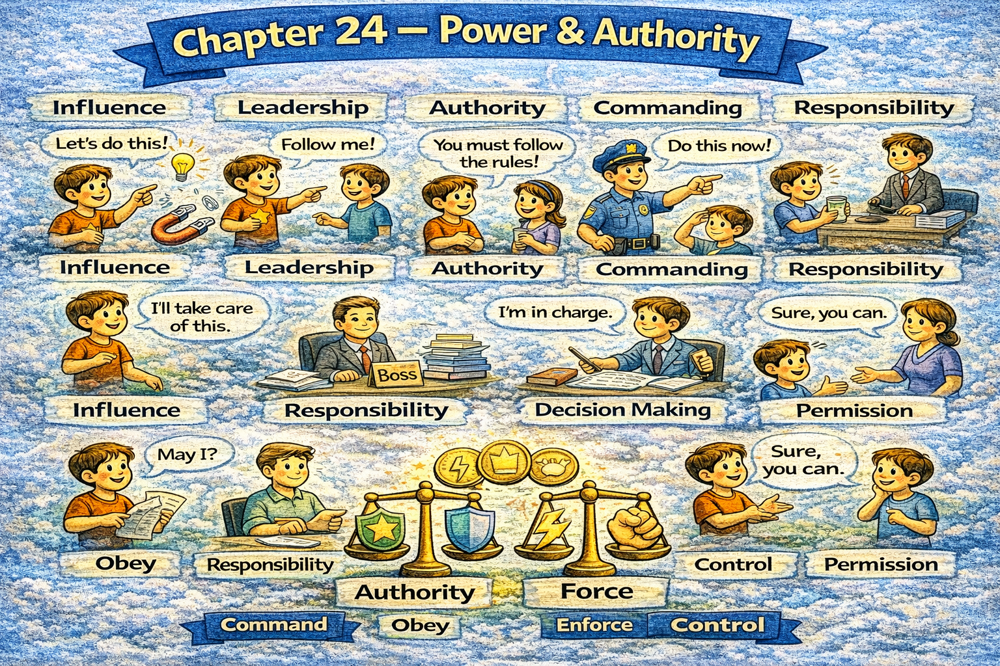

Chapter 24 — Power & Authority

Micro Scene 1 — Defining Power
1️⃣ Scene Text
Power determines who controls outcomes.
It reflects the ability to influence decisions and allocate resources.
If authority is unclear, confusion increases.
Power does not always require visibility.
Sometimes influence operates quietly through structure.
I distinguish between formal authority and informal influence.
When responsibility aligns with authority, execution improves.
Power without accountability creates imbalance.
Authority establishes boundaries.
Influence extends beyond position.
Power shapes direction.
2️⃣ Core Verb Pool
determine
control
reflect
influence
allocate
increase
require
operate
distinguish
align
improve
create
establish
extend
shape
3️⃣ Structure Patterns
X determines Y
If X + verb, Y + verb
X does not always + verb
When X + verb, Y + verb
X creates + noun
4️⃣ Replace & Extend
Replace control:
Power controls direction.
→ Authority sets limits.
→ Influence shapes outcome.
Replace imbalance:
Power without accountability creates risk.
→ Authority without oversight creates instability.
Replace distinction:
Formal authority differs from social influence.
→ Position differs from credibility.
5️⃣ Spoken Mode
Power decides direction.
If authority isn’t clear, confusion grows.
Influence isn’t always visible.
Power without responsibility is dangerous.
🔎 Structural Notes
• Authority = structural control.
• Influence ≠ position.
• Power requires boundary clarity.
Micro Scene 3 — Misuse of Power
1️⃣ Scene Text
Power becomes dangerous when it lacks restraint.
If authority is exercised without accountability, abuse becomes possible.
Control without transparency invites suspicion.
Misuse of power erodes legitimacy gradually.
When decisions serve personal interest rather than collective welfare, trust collapses.
Unchecked authority distorts judgment.
If criticism is suppressed, error multiplies.
Fear-based control produces compliance but destroys respect.
Power that resists scrutiny weakens over time.
Authority must operate within defined limits.
Sustainable power requires oversight.
2️⃣ Core Verb Pool
become
lack
exercise
invite
erode
serve
collapse
distort
suppress
produce
destroy
resist
weaken
require
operate
3️⃣ Structure Patterns
X becomes + adjective when + clause
If X + verb, Y + verb
X produces A but destroys B
When X + verb, Y + verb
X must + verb
4️⃣ Replace & Extend
Replace abuse:
If authority is unchecked…
→ If oversight is absent…
→ If transparency declines…
Replace collapse:
Trust collapses under misuse.
→ Legitimacy weakens under corruption.
→ Respect declines under coercion.
Replace sustainability:
Power requires restraint.
→ Authority requires accountability.
→ Influence requires transparency.
5️⃣ Spoken Mode
Power without limits becomes dangerous.
If there’s no accountability, abuse happens.
Fear can force compliance, but it kills respect.
Authority needs oversight.
🔎 Structural Notes
• “produces A but destroys B” contrasts short-term vs long-term effect.
• Oversight stabilizes power.
• Fear-based control is unstable.
Micro Scene 6 — Responsible Use of Power
1️⃣ Scene Text
Power carries the obligation to protect rather than exploit.
Responsible authority prioritizes long-term stability over immediate dominance.
If decisions concentrate benefit narrowly, imbalance emerges.
I evaluate how power affects those without equal influence.
Strength should provide security, not fear.
When authority is exercised proportionally, trust increases.
Restraint signals maturity.
If power is used impulsively, consequences escalate.
Responsible leadership anticipates impact before acting.
Power should create structure, not dependency.
Authority fulfills its purpose when it sustains fairness and order.
2️⃣ Core Verb Pool
carry
protect
exploit
prioritize
concentrate
emerge
evaluate
provide
exercise
increase
signal
escalate
anticipate
create
fulfill
sustain
3️⃣ Structure Patterns
X carries + noun
If X + verb, Y + verb
When X + verb, Y + verb
X should + verb
X fulfills its purpose when + clause
4️⃣ Replace & Extend
Replace protection:
Power should protect stability.
→ Authority should safeguard fairness.
→ Influence should reduce harm.
Replace escalation:
If power is misused…
→ If authority is abused…
→ If leadership lacks restraint…
Replace fulfillment:
Authority fulfills its role through fairness.
→ Power achieves legitimacy through responsibility.
→ Leadership earns trust through protection.
5️⃣ Spoken Mode
Power comes with responsibility.
It should protect, not exploit.
If authority is used impulsively, problems grow.
Real leadership stabilizes, not intimidates.
🔎 Structural Notes
• “protect rather than exploit” contrasts ethical orientation.
• Restraint = strength.
• Power stabilizes structure when responsible.
🔸 Integration Scene — Power Structure
Power determines direction.
Authority requires legitimacy.
Delegation expands capacity.
Misuse erodes trust.
Legitimacy depends on fairness.
Competence earns influence.
Restraint stabilizes authority.
Transparency protects credibility.
Distribution increases resilience.
Force weakens respect.
Accountability balances control.
Oversight prevents abuse.
Structure limits excess.
Power must align with responsibility.
Authority endures when justified.
Responsible power sustains order.
Integration Verb Focus
determine
legitimize
delegate
restrain
justify
protect
balance
sustain